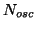
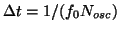

Next: Stabil_Time1
Up: Virtual AFM Box
Previous: Times
Contents
Number of timesteps per oscillation period,

; is used to
calculate the timesteps itslef using

.
Parameters:
Default: 400
Example: t-steps_in_period
500
Lev Kantorovich
2005-08-04